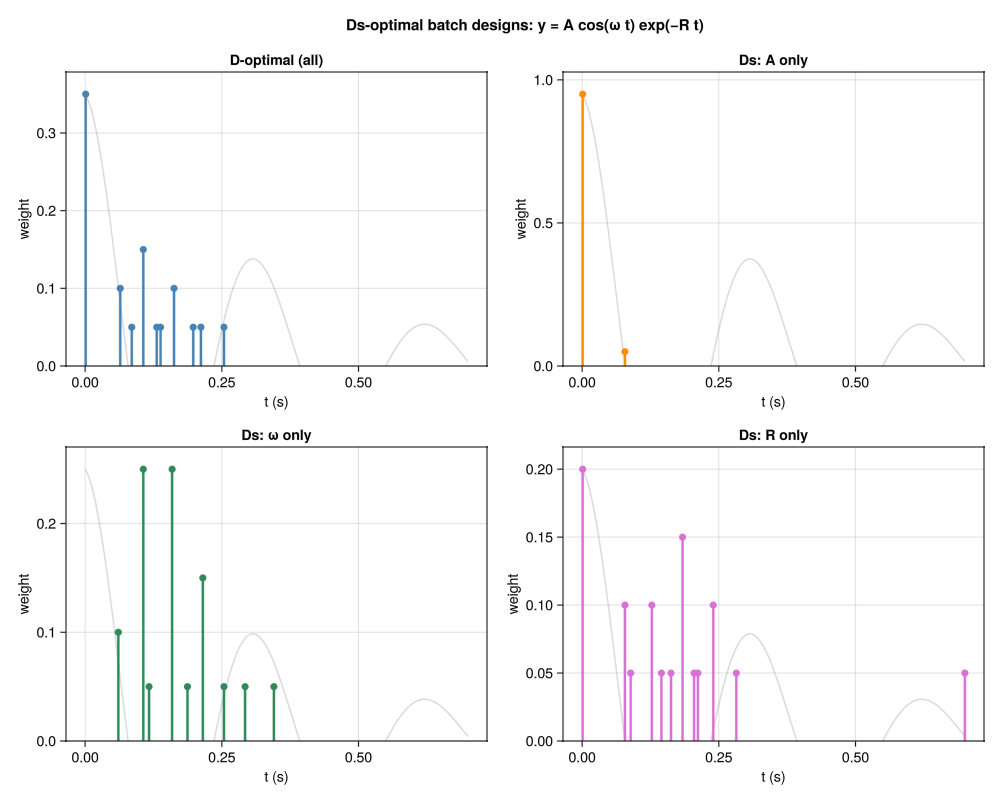
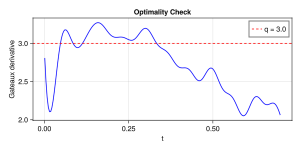
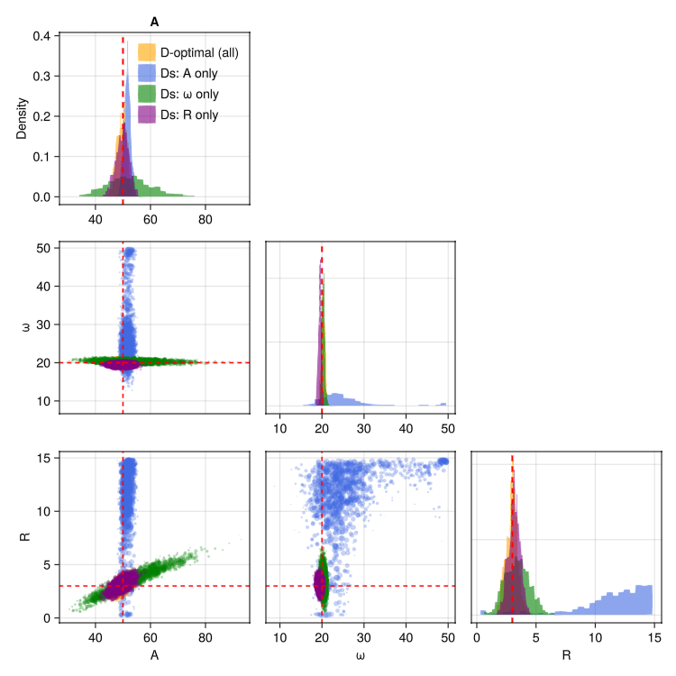

Targeting Specific Parameters
A real experiment rarely needs to be equally informative about all model parameters. Reaction-rate assays care about rate constants, not baseline amplitudes. Spectroscopic techniques care about resonance frequencies, not signal intensities. Ds-optimality encodes this priority: allocate measurements where they resolve the parameters you care about, while treating the rest as nuisance.
This example works through a damped cosine model with three parameters that each live at a different region of the time axis, making the effect of select() visually striking.
The model
\[y = A \cos(\omega \, t) \exp(-R \, t) + \varepsilon\]
Three parameters, each dominating a different regime:
| Parameter | Physical meaning | Visible region |
|---|---|---|
| $A$ | amplitude | early $t$ — large signal, no decay yet |
| $\omega$ | frequency | intermediate $t$ — oscillations clear, not yet aliased |
| $R$ | decay rate | spread across $t$ — compare signal levels at different times |
using OptimalDesign
using CairoMakie
using ComponentArrays
using Distributions
model(θ, x) = θ.A * cos(θ.ω * x.t) * exp(-θ.R * x.t)
θ_true = ComponentArray(A = 50.0, ω = 20.0, R = 3.0)
σ = 5.0
acquire(x) = model(θ_true, x) + σ * randn()Four design problems
Setting up four problems that share the same model and prior but target different parameters. select(:p) switches from D-optimality (all parameters) to Ds-optimality for the named subset:
prior_specs = (
A = LogUniform(5.0, 500.0),
ω = Uniform(3.0, 50.0),
R = Uniform(0.2, 15.0),
)
prob_all = DesignProblem(model; parameters = prior_specs, sigma = Returns(σ))
prob_A = DesignProblem(model; parameters = prior_specs, sigma = Returns(σ),
transformation = select(:A))
prob_ω = DesignProblem(model; parameters = prior_specs, sigma = Returns(σ),
transformation = select(:ω))
prob_R = DesignProblem(model; parameters = prior_specs, sigma = Returns(σ),
transformation = select(:R))
candidates = candidate_grid(t = range(0.001, 0.7, length = 200))Computing designs
Each design allocates 20 measurements. We use the same set of particles for every problem so that randomness is not a confound:
n = 20
Random.seed!(42)
ξ_all = design(prob_all, candidates, Particles(prob_all, 1000); n)
ξ_A = design(prob_A, candidates, Particles(prob_A, 1000); n)
ξ_ω = design(prob_ω, candidates, Particles(prob_ω, 1000); n)
ξ_R = design(prob_R, candidates, Particles(prob_R, 1000); n)[ Info: Running exchange algorithm for batch design...
[ Info: Exchange: K=200 candidates, q=3.0, 1000 fixed particles, max_iter=100
[ Info: Init: 14 support points
[ Info: Phase 2: refining weights on 14 support points
[ Info: Exchange complete: 38 support points, fw_gap=0.0159
[ Info: Running exchange algorithm for batch design...
[ Info: Exchange: K=200 candidates, q=1.0, 1000 fixed particles, max_iter=100
[ Info: Init: 14 support points
[ Info: Phase 2: refining weights on 7 support points
[ Info: Exchange complete: 20 support points, fw_gap=0.0876
[ Info: Running exchange algorithm for batch design...
[ Info: Exchange: K=200 candidates, q=1.0, 1000 fixed particles, max_iter=100
[ Info: Init: 14 support points
[ Info: Phase 2: refining weights on 11 support points
[ Info: Exchange complete: 24 support points, fw_gap=0.0243
[ Info: Running exchange algorithm for batch design...
[ Info: Exchange: K=200 candidates, q=1.0, 1000 fixed particles, max_iter=100
[ Info: Init: 14 support points
[ Info: Phase 2: refining weights on 12 support points
[ Info: Exchange complete: 34 support points, fw_gap=0.0082Design allocations
The four designs look completely different:
t_fine = range(0.0, 0.7, length = 400)
y_true = [model(θ_true, (t = t,)) for t in t_fine]
t_cands = [c.t for c in candidates]
colors = [:steelblue, :darkorange, :seagreen, :orchid]
labels = ["D-optimal (all)", "Ds: A only", "Ds: ω only", "Ds: R only"]
designs = [ξ_all, ξ_A, ξ_ω, ξ_R]
fig = Figure(size = (1000, 800))
Label(fig[0, 1:2], "Ds-optimal batch designs: y = A cos(ω t) exp(−R t)";
fontsize = 15, font = :bold)
for (i, (label, ξ, col)) in enumerate(zip(labels, designs, colors))
row = 1 + (i - 1) ÷ 2
col_idx = 1 + (i - 1) % 2
ax = Makie.Axis(fig[row, col_idx];
xlabel = "t (s)", ylabel = "weight", title = label)
w = weights(ξ, candidates)
mask = w .> 0
if any(mask)
wmax = maximum(w[mask])
lines!(ax, collect(t_fine),
y_true .* wmax ./ maximum(abs.(y_true));
color = (:gray, 0.3), linewidth = 1.5)
for (xi, wi) in zip(t_cands[mask], w[mask])
lines!(ax, [xi, xi], [0.0, wi]; color = col, linewidth = 2.5)
end
scatter!(ax, t_cands[mask], w[mask]; color = col, markersize = 10)
end
ylims!(ax, 0, nothing)
end
fig
- Ds(A) clusters at the very start of the time axis, where the signal is largest and the cosine is approximately 1 for all plausible $\omega$. Knowing $A$ requires no frequency information.
- Ds(ω) spreads through intermediate times where successive oscillations can be distinguished. Very early times give no phase information; very late times alias across the broad $\omega$ prior.
- Ds(R) uses a wider temporal spread — comparing signal levels at different times is what pins down the decay constant.
- D-optimal compromises across all three regimes.
Verifying optimality
The Gateaux derivative provides a formal check: it should touch the bound $q$ (number of targeted parameters) at the design support points and lie below $q$ everywhere else.
opt_all = verify_optimality(prob_all, candidates, Particles(prob_all, 1000), ξ_all)
plot_gateaux(opt_all)
For the D-optimal design the bound is $q = 3$ (all parameters). The two peaks sit exactly at the support points, confirming optimality.
verify_optimality inverts the full $p \times p$ FIM over the design. For a Ds design such as select(:A), all measurements fall at very early times where the decay factor $\exp(-Rt) \approx 1$ for any $R$ in the prior — the FIM has essentially no information about $R$ and is rank-deficient. This is the correct physical outcome (the design deliberately ignores nuisance parameters), but it means the Gateaux certificate is only well-defined when the design is informative about all parameters, not just the targeted subset. See Theory for the full Ds-optimality conditions.
Running experiments
Finally, compare what each design learns when used to collect data:
Random.seed!(42)
result_all = run_batch(ξ_all, prob_all, Particles(prob_all, 1000), acquire)
result_A = run_batch(ξ_A, prob_A, Particles(prob_A, 1000), acquire)
result_ω = run_batch(ξ_ω, prob_ω, Particles(prob_ω, 1000), acquire)
result_R = run_batch(ξ_R, prob_R, Particles(prob_R, 1000), acquire)
for (label, r) in zip(labels, [result_all, result_A, result_ω, result_R])
s = std(r)
println(rpad(label, 22),
" σ_A = ", lpad(round(s.A; digits=2), 6),
" σ_ω = ", lpad(round(s.ω; digits=2), 6),
" σ_R = ", lpad(round(s.R; digits=2), 6))
endD-optimal (all) σ_A = 1.81 σ_ω = 0.46 σ_R = 0.49
Ds: A only σ_A = 1.21 σ_ω = 7.38 σ_R = 3.27
Ds: ω only σ_A = 8.42 σ_ω = 0.37 σ_R = 1.04
Ds: R only σ_A = 2.39 σ_ω = 0.36 σ_R = 0.49The Ds(A) design yields the smallest $\sigma_A$; Ds(ω) the smallest $\sigma_\omega$; Ds(R) the smallest $\sigma_R$. The D-optimal design is a Pareto compromise.
plot_corner(result_all.posterior, result_A.posterior,
result_ω.posterior, result_R.posterior;
labels = labels, truth = θ_true)
See also
- Batch Design — basics of D-optimal design
- Workflows — full guide to the design–acquire–update loop
- Theory — explanation of Ds-optimality and the delta method